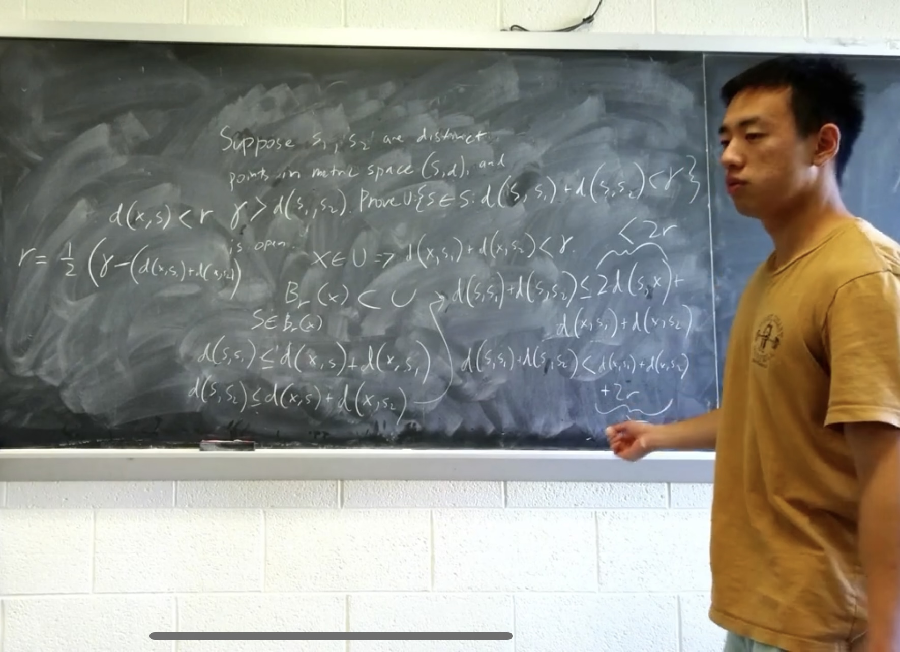

MATH 447: Real Variables

My real analysis archive from MATH 447, including compiled notes, worked homework, and final-exam preparation.
I was inspired to take real analysis—“calculus done right”—after my continuum mechanics professor recommended it when I asked what course would give me a deeper understanding of the mathematics underlying solid mechanics.
A later conversation with a classmate in graduate school led me to an idea I keep returning to: it is useful to study the layer beneath your current working level (more on this in a future blog post). Studying analysis and geometry felt like going two layers beneath where most engineers work: engineers use tools developed by solid mechanicians, who in turn use tools developed by mathematicians.
The official course textbook was Kenneth A. Ross’s Elementary Analysis: The Theory of Calculus, but I primarily used Walter Rudin’s Principles of Mathematical Analysis, along with Francis Su’s Real Analysis video lecture series at Harvey Mudd College.
Disclaimer: Some of my homework solutions may be incorrect.
Compiled notes and review
- Condensed lecture notes Foundations, sequences, topology, continuity, convergence, differentiation, and integration.
- Final exam preparation A focused review assembled at the end of the course.
Lecture slides
- Browse lecture slides Lectures 1–36, with previous and next navigation.
Homework
- Homework 1Fundamental mathematical tools
- Homework 2Sequences
- Homework 3Limits
- Homework 4Topology
- Homework 5Series
- Homework 6Pointwise continuity
- Homework 7Uniform continuity
- Homework 8Pointwise and uniform convergence
- Homework 9Differentiation
- Homework 10Integration